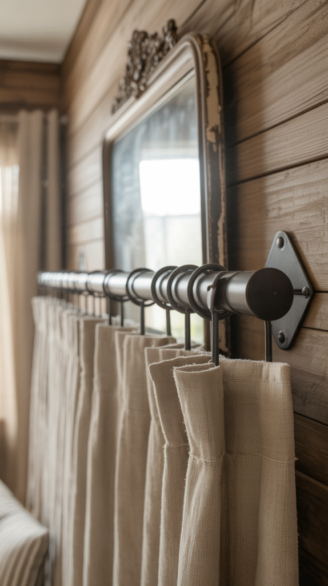
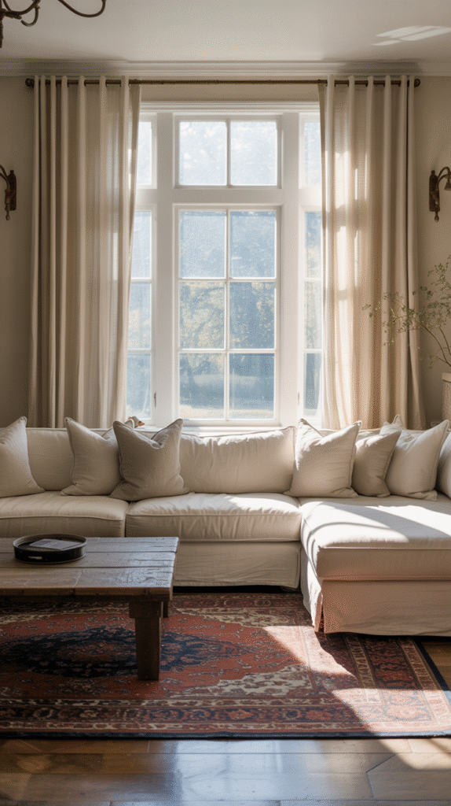
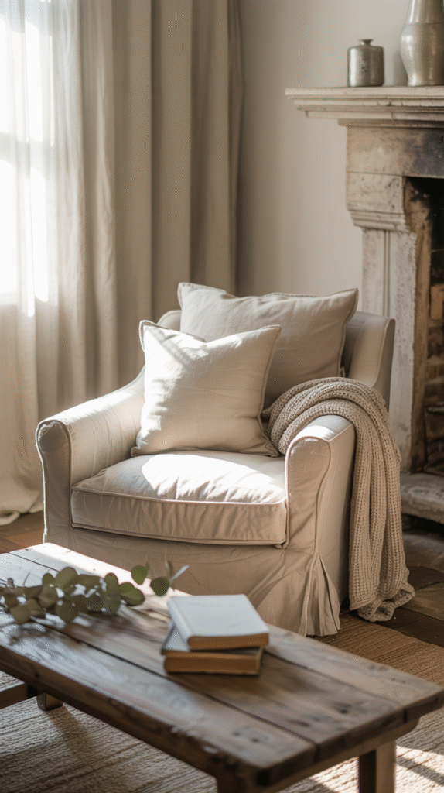
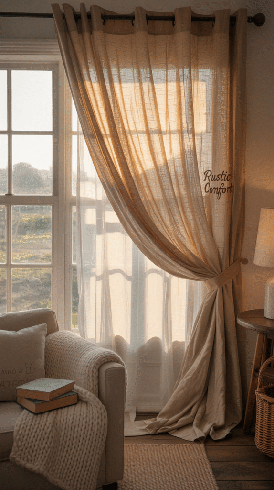
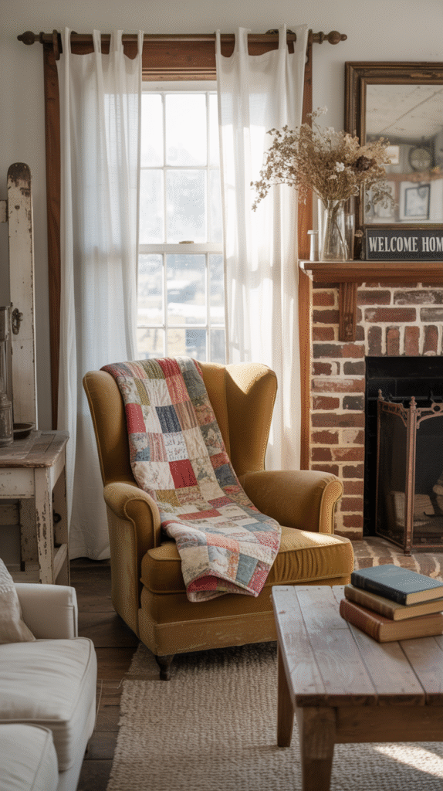
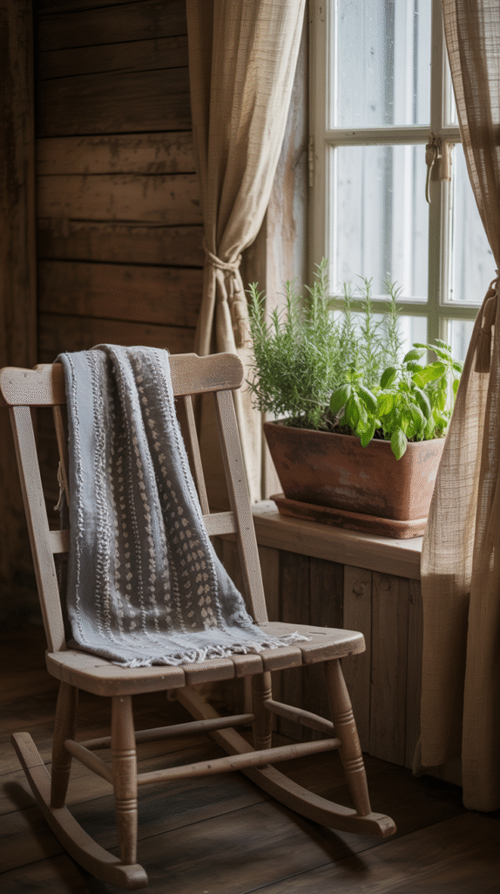
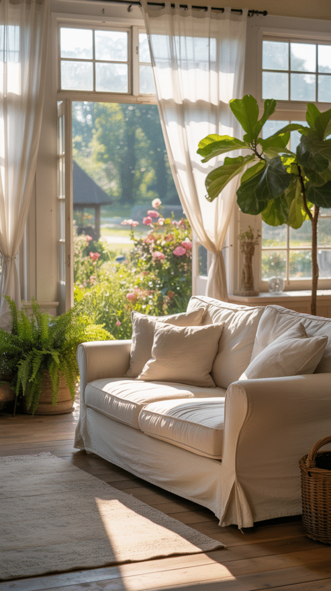
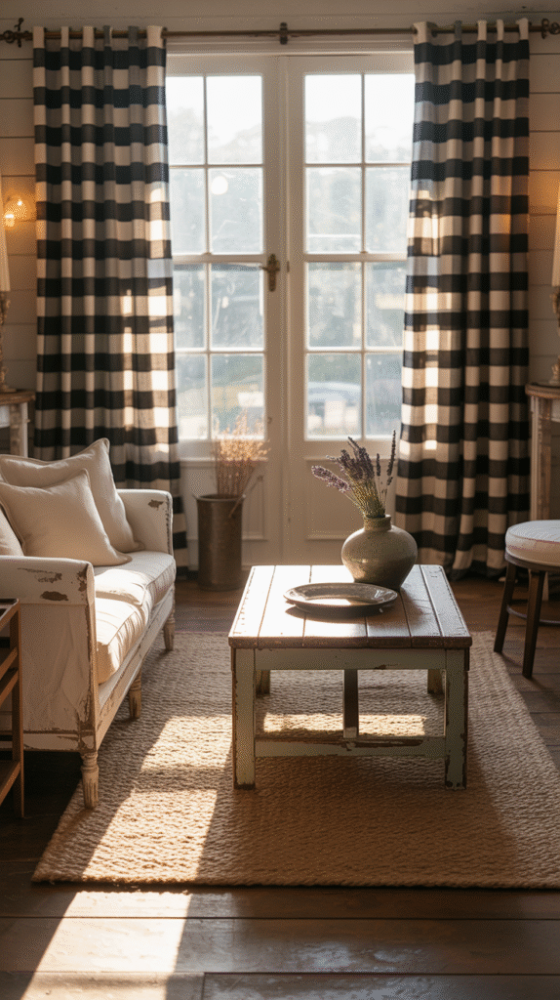
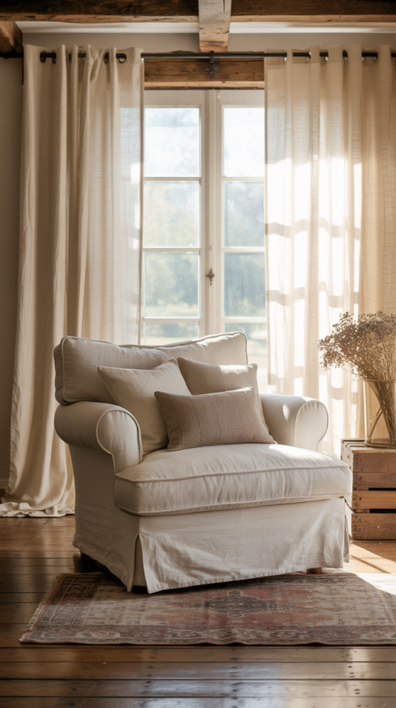

A farmhouse living room has a specific textile language, natural fibers, a little imperfection, nothing too polished.
The curtains need to speak it too, or the whole room reads as slightly off no matter what else is right.
These nine styles cover what actually fits.

1. Rods and Hardware
Wrought iron or aged wood curtain rods carry the farmhouse material story all the way to the top of the window, rather than stopping at the fabric.
This detail gets overlooked often, but a mismatched modern rod can undercut an otherwise perfect curtain choice.

2. Getting the Length Right
Curtains that stop short of the floor read as a mistake rather than a style choice in almost every farmhouse living room.
Hanging them to just graze the floor, or with a slight break like a tailored pant hem, consistently reads as the most intentional length.

3. Neutral Tones
Sticking to neutral tones, cream, soft white, warm beige, keeps curtains working as a backdrop rather than competing with the room's other farmhouse details.
This is the safest, most versatile choice on this list, pairing easily with almost any other farmhouse element already in the room.

4. Layered Curtains
Layering a sheer panel under a heavier curtain doubles the coziness and gives the window more styling flexibility throughout the day.
This approach also solves a real practical need, letting light in during the day while still offering full privacy and warmth at night.

5. Tab Top and Tie Top
Tab top and tie top styles bring genuine handmade detail to the top of the curtain, a small touch that reinforces the farmhouse aesthetic's appreciation for visible craft.
This detail also tends to create fuller, more relaxed folds than a standard rod-pocket curtain does.

6. Burlap
Burlap brings a genuinely raw, rustic texture that few other fabrics can replicate, leaning hard into the farmhouse aesthetic's rougher side.
This is a bolder, more textural choice best suited to a room already committed to a rustic rather than a refined farmhouse look.

7. Sheer White Panels
Sheer white curtains bring a dreamy, soft quality that lets maximum light through while still giving the window genuine definition.
This style pairs especially well layered under a heavier curtain, combining the softness of sheer with the structure of something more substantial.

8. Buffalo Check
A buffalo check pattern brings genuine country character and a touch of playfulness that a solid fabric can't offer.
This works best as a single accent window rather than throughout the whole room, keeping the pattern a highlight instead of overwhelming the space.

9. Classic Linen
Linen remains the farmhouse curtain default for genuine reason, its natural texture and slightly relaxed drape fit the style better than almost any other fabric.
It also softens light beautifully without blocking it completely, which suits a farmhouse room's usual preference for a bright, airy feel.

The Final Touch: Tiebacks
A simple rope, leather strap, or woven tieback finishes the look and keeps curtains functional during the day without looking like an afterthought.
This small detail is one of the easiest and cheapest ways to add a final layer of farmhouse character to an already-chosen curtain.
Keep It Cozy, Keep It You
None of these nine styles is universally correct for every farmhouse living room.
Fabric, length, and hardware all work together, and getting those three details right matters more than chasing any single trendy pattern.
Pick the one that fits the room already in front of you, not the one trending this week.